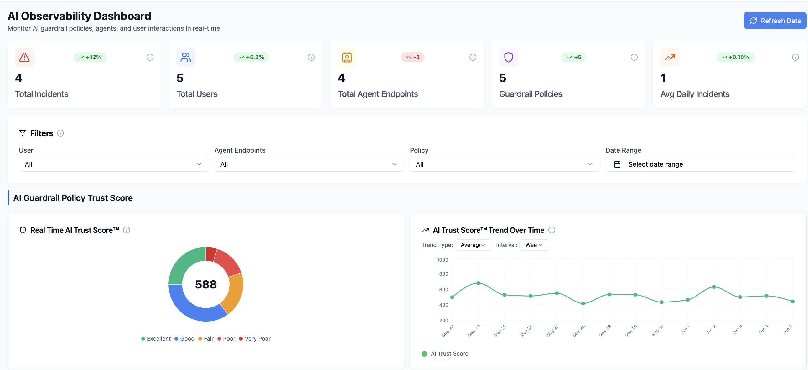
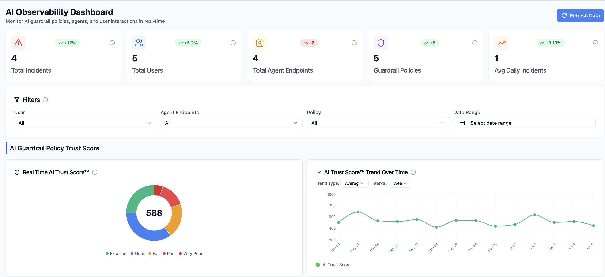

Enhancing Intuitive Navigation + Cutting Interaction Complexity
AI Security Studio: End-to-End AI Risk & Validation Platform
As a Founding Engineer at Tumeryk, a pre-seed startup, I led both design and developement efforts for enhancing user experience, improving the efficiency of the platform, and implementing new features as well as building upon existing features based on user/shareholder feedback.
Rapid MVP Growth Outpacing UX Fundamentals
Tumeryk’s early AI Security Studio MVP prioritized rapid functionality, resulting in a feature-dense but fragmented dashboard, creating an overwhelming user experience. Key workflows—asset discovery, model monitoring, scan configuration, and results review—were spread across disconnected views with little hierarchy or guidance. Security analysts had no clear entry point, struggled to find critical features, and lacked a unified understanding of their AI ecosystem.
Key challenges included:
- No centralized overview of an organization’s AI workflows or model assets
- Fragmented navigation that mirrored backend structure rather than user mental models
- Feature discovery was difficult; critical tools were hidden behind deep menus
- The workflow for configuring and reviewing AI scans felt disjointed
- Security analysts lacked a clear starting point and struggled to understand what required attention
Understanding Our Product and Target Audiences
Through in-depth interviews with internal stakeholders as well as user research, I was able to uncover the following key insights:
- The product is designed for security analysts who are responsible for monitoring and managing AI assets and risks
- The product is designed for security analysts who are responsible for monitoring and managing AI assets and risks
I designed and implemented a centralized, intuitive, and scalable interface that unifies AI asset visibility, risk monitoring, and scanning workflows into a cohesive, analyst-friendly platform. The objective was to organize complex functionality into clear, actionable flows; establish consistent, reusable UI patterns; and transform a feature-packed MVP into a guided, workflow-driven system that makes complex security tasks simple and traceable.

Something here...
Pioneered AI integration in our design process using V0 by Vercel and Figma Make, collaborating closely with PM and engineering to navigate technical constraints and business priorities.
Key Features
Feature #1
Feature #2
Feature #3
Role-Based Permissions
Designed role-aware experiences that show different features and actions based on user permissions. Administrators see advanced configuration options, while reviewers see only relevant review queues.
Design Process
I followed a user-centered design approach, starting with stakeholder interviews and user journey mapping. After identifying pain points, I created low-fidelity wireframes to explore different layout options, then moved to high-fidelity Figma prototypes with interactive components.
The design system was built with reusability in mind, using Figma components and variants that could be easily adapted for other client implementations. This approach reduced design time for similar projects by 40%.
Reflection
Established design review processes to ensure quality delivery despite handoff challenges, creating a scalable design system with reusable components.
Design System Components
Created a scalable design system with reusable components including:
- Data grid components with sorting, filtering, and pagination
- Status indicators and confidence score badges
- Multi-step workflow steppers
- Bulk action toolbars
- Modal dialogs for document review
- Form components with validation states